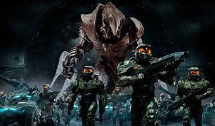
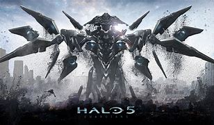

Historia de los Juegos de Halo
La saga de Halo ha sido una de las más influyentes en la historia de los videojuegos. A continuación, te presentamos los títulos más importantes de la saga, junto con sus fechas de lanzamiento, desarrolladores y curiosidades.
üéÆ Halo Wars (2531)
Halo Wars es un juego de estrategia en tiempo real ambientado en el universo de Halo...
Fecha de lanzamiento: 26 de febrero de 2009
Desarrollador: Ensemble Studios
Plataformas: Xbox 360, PC
Curiosidad: Fue el primer juego de Halo en adoptar el formato de estrategia en tiempo real.
üéÆ Halo: Combat Evolved (2001)
Halo: Combat Evolved es el primer juego de la saga y el que marcó el inicio de todo el universo de Halo...
Fecha de lanzamiento: 15 de noviembre de 2001
Desarrollador: Bungie
Plataformas: Xbox, PC
Curiosidad: Fue el título que definió la franquicia Halo y revolucionó los shooters en consola.
üéÆ Halo 2 (2004)
Halo 2 es la secuela que expandió el universo de Halo, con más acción y la introducción de nuevos personajes...

Fecha de lanzamiento: 9 de noviembre de 2004
Desarrollador: Bungie
Plataformas: Xbox
Curiosidad: Introdujo el multijugador en línea en la saga.
üéÆ Halo 3 (2007)
Halo 3 concluye la trilogía original de Halo y ofrece una experiencia épica de guerra en el espacio...

Fecha de lanzamiento: 25 de septiembre de 2007
Desarrollador: Bungie
Plataformas: Xbox 360
Curiosidad: El final de la trilogía original de Master Chief y su lucha contra el Covenant y los Flood.
üéÆ Halo Wars 2 (2017)
Halo Wars 2 es la secuela de Halo Wars, continuando la historia de los enfrentamientos con la UNSC...
Fecha de lanzamiento: 21 de febrero de 2017
Desarrollador: 343 Industries, Creative Assembly
Plataformas: Xbox One, PC
Curiosidad: Mejorado con nuevas mecánicas y gráficos mejorados para una experiencia más envolvente.
üéÆ Halo: Reach (2010)
Halo: Reach narra los eventos previos a Halo: Combat Evolved, siendo la última entrega de Bungie en la saga...

Fecha de lanzamiento: 14 de septiembre de 2010
Desarrollador: Bungie
Plataformas: Xbox 360, PC
Curiosidad: Se centra en la caída del planeta Reach, un evento clave en la guerra contra el Covenant.
üéÆ Halo 4 (2012)
Halo 4 marca el comienzo de una nueva trilogía con el regreso de Master Chief...

Fecha de lanzamiento: 6 de noviembre de 2012
Desarrollador: 343 Industries
Plataformas: Xbox 360, Xbox One, PC
Curiosidad: Introdujo una nueva historia con el regreso de Cortana y nuevos enemigos como los Forerunners.
üéÆ Halo 5: Guardians (2015)
Halo 5: Guardians continúa la historia de Halo 4, profundizando en la relación entre Master Chief y su IA, Cortana...
Fecha de lanzamiento: 27 de octubre de 2015
Desarrollador: 343 Industries
Plataformas: Xbox One
Curiosidad: El multijugador en línea se centró en la cooperación y el trabajo en equipo.